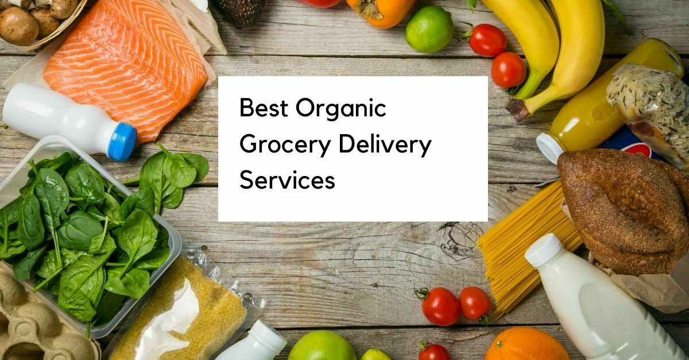

Blog onOrganic Grocery Shopping
What are Organic grocery shopping and the advantages of organic grocery shopping?
What is Organic Food?
Organic food has become a trending topic recently. Whenever we visit any supermarket and browser shopping websites to buy our daily groceries, we come across a section where only organic products are sold. Even on various blogging sites, we come across articles related to online grocery shopping and its benefits. But what are these organic products?
Organic food is a debatable topic because different countries provide a different definition of organic food. For a general statement, we can safely say that organic food is referred to the type of products which are grown in a specific way (Mostly in a natural way without using chemical substances).
Organic Food or grocery is grown in a natural way without using any chemical fertilizers, growth hormones, pesticides, etc. These foods are expensive because they are completely natural and do not have any tinge of chemicals in them.
On the other hand, organic livestock also exists. In an organic livestock farm, eggs, meat, and dairy products are produced by the animals who are given organic food to eat and are not injected with any chemical substances.
Difference between organic and non- organic food
The term organic food is very new and most of us are not that well-versed with the difference of normal food and organic food. We are only concerned about eating healthy food and research on topics like Online Grocery Shopping and its benefits. But in order to eat healthily, we need to know the difference between organic and non-organic food.
Organic Food
Organic groceries are grown with the help of natural means. They are given natural fertilizers like manure and compost.
The weed production of organic food is controlled by natural products like tiling, crop rotation, mulching, etc.
The insects and pests are controlled naturally with the help of traps, birds and counter insects.
The organic livestock has access to the outdoors. Hence it can grow in a more natural way and it can have more immunity than other livestock who are grown indoors.
The organic livestock is fed natural food.
Non-Organic Food
Non-organic foods are grown with the help of fertilizers and synthetic chemicals
Weeds and other unwanted crops are controlled with the help of chemicals and synthetic herbicides.
Pesticides and insecticides are used to kill all the pests and bugs.
Conventionally raised livestock do not have access to the outdoors. They are grown indoors and hence they have a weak immune system.
Conventional livestock is injected with growth hormones for faster growth. They are also given antibiotics and chemical infused food.
Advantages of consuming organic food
The food we eat directly affects the condition of both our mental and physical health. Therefore, why compromise on the food when we know it is a vital ingredient for our healthy living. Therefore, from here we can conclude that organic food should be consumed by everyone as it has fewer chemicals and more nutrients.
When people shift from conventionally grown food to organic ones, they instantly feel the difference in their well-being. Here are some advantages of having organic food

Very healthy
When we compare conventionally grown food with organic food, the first thing which we can easily conclude that organic food is much healthier than non- organic ones. This is because organic food is grown with the help of natural means.
Lesser use of synthetic chemicals
Non-organic food is grown with the help of artificial chemical fertilizers and other chemicals. These chemicals help the plants to grow faster and also protects it from bugs and pests. But our health is affected if we consume these synthetic chemical infused foods.
More fresh
Organic food is produced in less quantity. Therefore, as soon as it is harvested, it is sold for consumption. Organic food cannot be stored for a longer period of time because preservatives are not used.
Protects the environment
Organic food farming involves farming techniques which are eco-friendly. Conventionally grown food uses chemical fertilizers and pesticides which are harmful to the environment.
Protects us from animal infected diseases
Conventionally grown livestock are always injected with antibiotics and other types of medicines. This at times leads to diseases like Mad Cow Disease, etc.
Organic grocery Shopping: Online Grocery Shopping and its benefits
Buying groceries which have the label of organically grown is known as organic grocery shopping. Online grocery shopping has a lot of benefits.
Quality products
Websites selling organic grocery products tend to provide the best quality. If you are buying organic groceries online, then you can be assured of getting the top-quality product.
Amazing deals
Online websites have some deals or offers on the roll. Online vegetable shopping can even save you some bucks.
Saves effort
The biggest advantage of online shopping is it saves time and effort. Just select the products you want to purchase and it will be delivered to your house in no time.
Conclusion
Nowadays everyone is opting for fitness and a better way of life. So, it is important for us to shift to organic food. Refer to the above points to understand the benefits of consuming organic food.